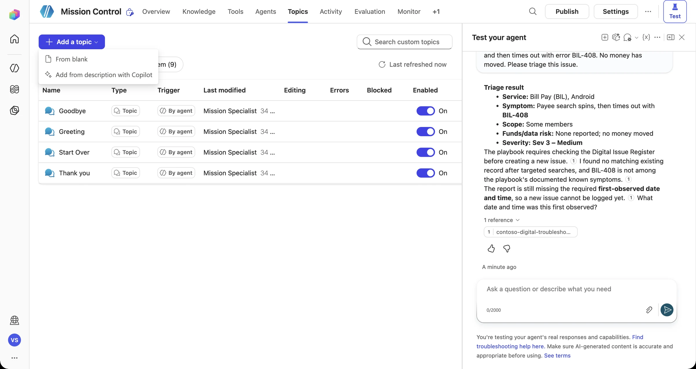
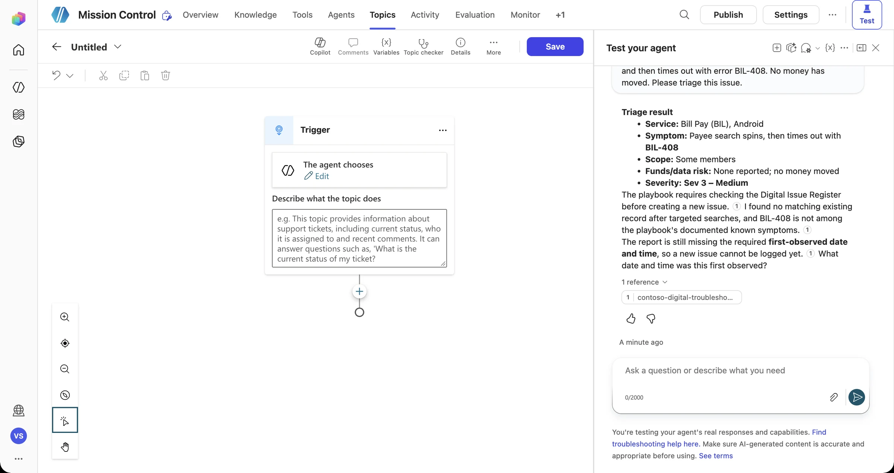
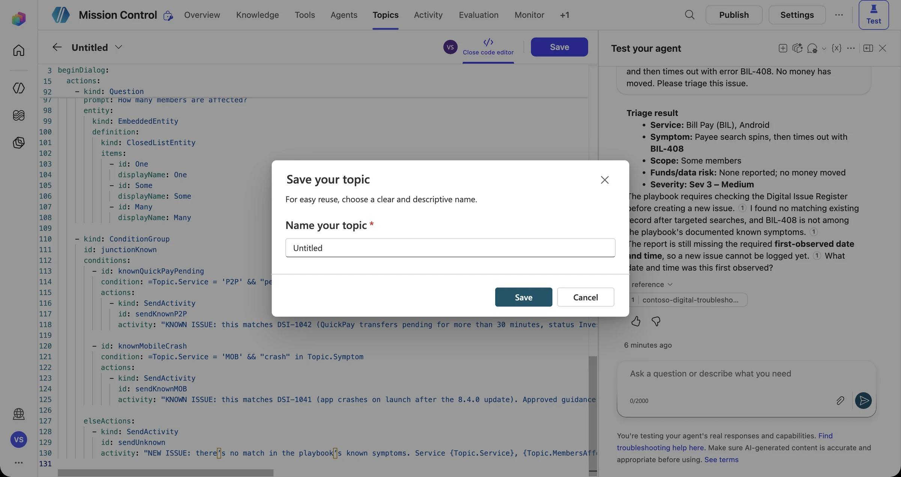
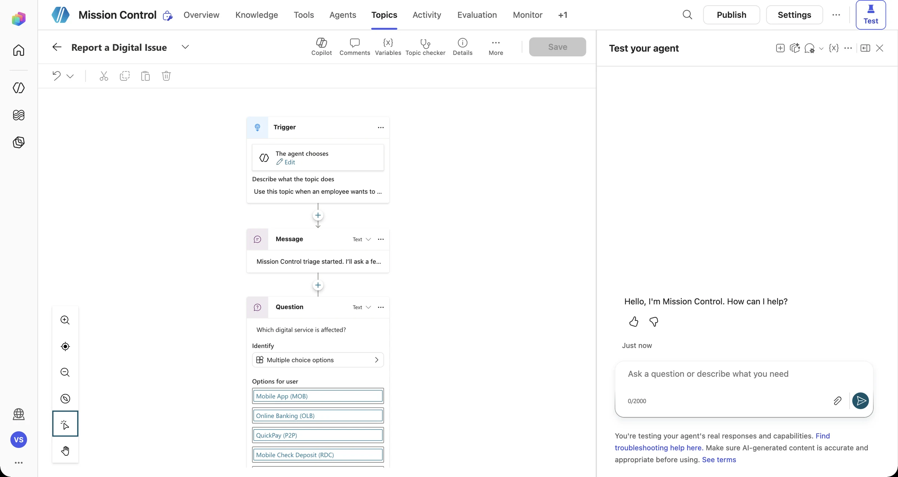
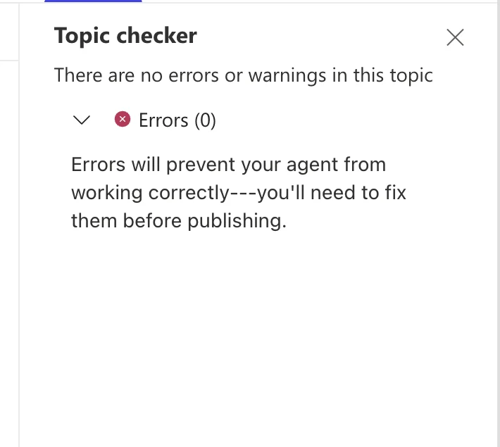

Briefing Discover
Real issue reports are messy. “The app is broken.” “QuickPay?? again??” “Members can't log in, idk how many.” A smart agent doesn't just act. It decides whether it's safe and sensible to act yet.
The four branches of Mission Control
Known issue
It matches the playbook or an open register record. Share the guidance and link the existing ID. No duplicates.
Unknown issue
No match, and the details are complete. Run the triage workflow and return the new ID.
Incomplete report
Required details are missing. Ask follow-up questions before taking any action.
Sensitive / Sev 1
There's a funds or data risk, or a widespread outage. Stop and escalate to a human.
The topic toolkit
Topics are where you write rule-driven conversation. Each topic is a canvas of nodes:
| Node | Use it to… | Mission Control example |
|---|---|---|
| Trigger | Define when the topic starts (by description or trigger phrases) | “Report a digital service issue” |
| Question | Ask the user something and store the answer in a variable, validated by an entity | “Which service?” → Topic.Service (closed list) |
| Condition | Branch on variable values | Topic.MembersAffected = "Unknown" |
| Variable management | Set, parse, or clear values | Bump severity one level when the count is unknown |
| Call a tool / action | Run a workflow or connector, then capture its outputs | Triage Digital Issue → IssueId |
| Message | Respond, with variables inline | “Created {IssueId} at {Severity}.” |
| Topic management | Redirect, end the topic, or transfer to an agent | Redirect to Escalate for Sev 1 |
Validation: let entities do the work
Entities validate answers at the door. A closed-list entity for service codes means “mobil app” still resolves to MOB, and “toaster” doesn't get through. A regular-expression entity can enforce error-code formats.
MOB → synonyms: mobile app, app, iphone app, android app
OLB → synonyms: online banking, website, web banking, browser
P2P → synonyms: quickpay, quick pay, transfer, send money
RDC → synonyms: mobile deposit, check deposit, remote deposit
BIL → synonyms: bill pay, bills, payee
MFA → synonyms: passcode, otp, verification code, sign-in code, 2fa
NTF → synonyms: alerts, notifications, push, push alerts^(MOB|OLB|P2P|RDC|BIL|MFA|NTF)-\d{3}$Exception handling
- Re-prompts: Question nodes can retry when an answer doesn't match the entity, then fall back (for example, to “I'll pass this to a human”).
- Interruptions: Users change their minds partway through a topic. Decide whether a topic can be interrupted.
- Tool failures: The workflow can fail. Check its output before you report success (more on this in Mission 09).
- System topics: On Error, Fallback, and Escalate are your safety nets. Customize them, don't ignore them.
Simulator: run the junction Interactive
Click through a live report and watch which branch it lands on. Try to reach all four endings.
Handle known, unknown, and incomplete reports
What you'll build
- A Report a Digital Issue topic with Question nodes for the required details
- Conditions that route to the Known, Unknown, Incomplete, and Sensitive branches
- A call to the Mission 03 triage workflow on the Unknown branch
- Graceful handling of missing or invalid answers
Win conditions
- All four test prompts below land on the correct branch
- No record is created for a known issue
- No action runs while a required detail is still missing
| # | Test prompt | Expected branch |
|---|---|---|
| T1 | “Members say the app crashes right after the splash screen since the 8.4.0 update.” | A · Known → DSI-1041 guidance |
| T2 | “Bill Pay shows BIL-512 when members add a new payee on Android, a few members so far.” | B · Unknown → new record |
| T3 | “Something's wrong with deposits.” | C · Incomplete → follow-up questions |
| T4 | “A member says QuickPay debited them twice for the same transfer.” | D · Sensitive → escalate |
-
Create a topic from blank
In Mission Control, open Topics → Add a topic. You have two options: From blank, or Add from description with Copilot. Choose From blank. You'll build the junctions deliberately so you know exactly what each one does.

The new topic opens with a Trigger set to The agent chooses. With generative orchestration, the agent picks topics by their description, not by exact keywords.

-
Choose your build path
Path A: canvas (recommended for first-timers). Use + → Ask a question, Add a condition, Send a message, and Variable management to build the four junctions in the map below.
Path B: code editor (fast lane). Open More → Open code editor, select everything, and paste the topic from the lab kit: report-digital-issue-topic.yaml. Every topic is YAML underneath, and the canvas is a visual editor for it.

On the first save, you'll be asked to name the topic. Use Report a Digital Issue.Junction Node Logic 1 · Identify Question → Topic.ServiceMultiple choice: the 7 service codes 2 · Sensitive? Question (Yes/No) → Condition =Topic.FundsOrDataRisk = true→ Sev 1 message → End topic3 · Incomplete? Question → Condition → follow-up Question =Len(Topic.Symptom) < 25→ ask for the error code, platform, and start time, then merge withSet variable4 · Known? Condition (2 cases + else) ="pending" in Topic.Symptom→ DSI-1042 ·="crash" in Topic.Symptom→ DSI-1041 · else → new issue -
Read the result on the canvas
Close the code editor. The YAML is rendered as nodes: Message → Question (multiple choice) → Question → Condition… Scroll through it and match each node to a junction in the table.

-
Run the Topic checker until it's clean
Open Topic checker. You need Errors (0) before the agent will run the topic reliably.

Real bug from our dry run Our first version compared the multiple-choice answer like this:=Topic.Service = 'P2P'. The checker reported “Identifier not recognized” and “Incompatible type comparison” twice. In Power Fx, single quotes mark an identifier, not text, and a choice variable isn't a plain string. The fix was to test the symptom text instead (="pending" in Topic.Symptom). In Mission 06 you'll replace these keyword checks with a real register lookup. -
Fly the four test prompts
Use a New test session for each prompt in the win conditions table (T1–T4). Answer the follow-up questions honestly, then check which branch fired in the activity map.
Members say the app crashes right after the splash screen since the 8.4.0 update.KNOWN ISSUE: matches DSI-1041. Update to 8.4.1 and restart the device. No new record is needed.Something's wrong with deposits.That's not quite enough detail to triage. Please add the error code (if any), the platform, and when it started.A member says QuickPay debited them twice for the same transfer.SENSITIVE: Sev 1 protocol. I will not take any action on my own. Page Digital Operations on-call now…Stretch goal In the else (new issue) branch, add + → Add a tool → Triage Digital Issue, and mapTopic.Service,Topic.Symptom,Topic.MembersAffected, andTopic.FundsOrDataRiskto its inputs. Your topic now calls your Mission 03 workflow and shows the returnedSeverityandRoute.
Telemetry check · Mission 04
Edge-case hunter
- Write three nasty test prompts the builder didn't plan for: a typo in the service name, two issues in one message, and an angry user who won't give details.
- Predict which branch each one should land on, then watch the builder run them. Was your prediction right?
- Log every surprise on the team's Day 2 improvement list.
Debrief Mission 04
Never act on an incomplete report. Questions and entities are your validation gate.
Check what already exists before you create anything new.
Sensitive branches should stop and escalate, not improvise.